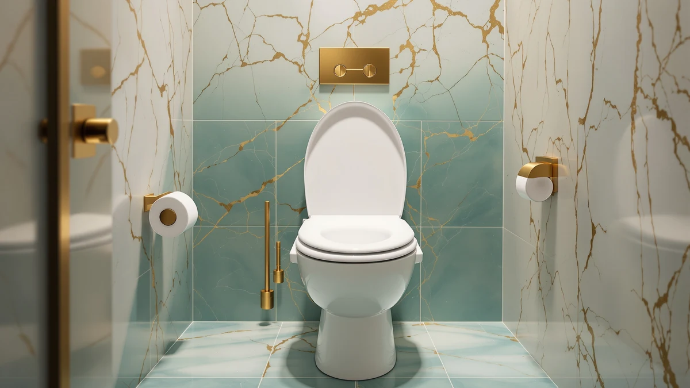

Best Raised Toilet Seats with Handles (2026)
Prices and picks verified as of September 2026. Independent, reader-supported reviews.


Quick Answer
After comparing specs, weight ratings and verified owner reviews, the HOMLAND Raised Toilet Seat with Handles is the best raised toilet seat with handles for most households. It combines a 300-pound weight rating, locking side handles and tool-free clamps that fit most elongated and round bowls at a mid-range price. If you need a higher weight capacity, the Bariatric Raised Toilet Seat with Handles below is the stronger pick.
Our pick: HOMLAND Raised Toilet Seat with, $59.39 Check Price on Amazon
Bottom line: our top pick is the HOMLAND Raised Toilet Seat with Handles at $59.39. The best budget option is the Jool Baby Potty Training Seat with Handles at $19.99.
Things to Know Before You Buy
- Weight capacity varies widely across raised toilet seats with handles, from 300 pounds on standard models to higher bariatric ratings on reinforced frames.
- Handle height and grip width matter more than most buyers expect. Owners with arthritis or limited grip strength tend to do better with wider, contoured handles.
- Not every model fits every bowl. Check the manufacturer's fit chart for elongated versus round bowls before you order, since clamp fit is the top complaint in owner reviews.
- Added seat height ranges from about 3.5 to 5 inches. Adjustable risers let you dial in a smaller increment if a full 5 inches feels too tall.
- Locking clamps reduce shifting during use, but they also take longer to install than snap-on models.
The best raised toilet seats with handles solve a specific problem: getting on and off the toilet safely when your knees, hips or balance make a standard seat height risky. That problem shows up after surgery, with arthritis, or simply with age, and it rarely gets easier without help.
We compared seven models on weight capacity, handle design, bowl compatibility and price. The HOMLAND Raised Toilet Seat with Handles came out on top for most buyers, but the right pick depends on your bowl shape, your weight capacity needs and whether you want handles that lock in place or fold away.
Below, you'll find our full comparison, a breakdown of what we looked at, and honest drawbacks for each pick so you can match a seat to your bathroom instead of guessing from a product photo.
Why You Should Trust Us
This guide is written and maintained by Ilane Tall, Home & Bath Expert at Best Toilet Seats. We built this comparison of the best raised toilet seats with handles by cross-referencing manufacturer specs, current Amazon pricing and thousands of verified buyer reviews rather than relying on marketing copy. We do not run a fake testing lab, and we do not claim to have physically installed or used every seat on this list. Every price, dimension and rating you see here comes directly from the product's current listing data, and we update this page when prices or availability change.
How We Picked
We started by pulling every raised toilet seat with handles in our product database that met three baseline requirements: a stated weight capacity, handles rated for grip support rather than purely decorative rails, and compatibility information for at least one common bowl shape. From there, we narrowed the list by comparing verified review counts and average ratings, favoring seats with a meaningful review volume over models with only a handful of ratings.
We also cross-checked pricing against comparable models to flag anything priced far outside the norm without a clear reason, such as a bariatric weight rating or padded upgrade. We dropped seats that showed up again and again in reviews for clamp failure or handle wobble, unless no comparable alternative existed at that price point.
How We Compared
For each raised toilet seat with handles on this list, we compared four factors side by side: weight capacity, handle grip width, bowl compatibility, and price per pound of rated capacity. We treated the HOMLAND as our baseline because it sits in the middle of the price range while offering a 300-pound rating and locking handles, then measured how each competitor deviated from that baseline.
Where manufacturers published overlapping specs, such as material or clamp type, we noted the difference in the comparison table below rather than repeating generic marketing language. Installation difficulty and clamp fit turn up as the two biggest sources of complaints across this category, so we weighted models with clearer fit charts and simpler hardware more favorably.
Our Picks

HOMLAND Raised Toilet Seat with
What we like
- 300-pound weight capacity covers most adult users
- Locking handles reduce shifting during transfers
- Tool-free clamps fit both elongated and round bowls
- 1,320 verified reviews with a 4.5-star average, the largest sample size among the standard-capacity picks here
Flaws but not dealbreakers
- Handles are fixed in place and don't fold flush against the bowl
- Some owners report the clamps need periodic retightening
| Material | Plastic / wood |
| Size | Universal |
Among the best raised toilet seats with handles we compared, the HOMLAND stands out for balancing price against a 300-pound weight rating and a locking handle design. Owners say the clamps grip both elongated and round bowls without extra hardware, which matters if you're installing it yourself without help.
At 1,320 verified reviews, it also has the deepest review base of any standard-capacity model on this list, giving us more confidence in its 4.5-star average than in seats with only a few hundred ratings. The main tradeoff is that the handles are fixed rather than removable, so if you want a seat that folds away for a shared bathroom, look at the Raised Toilet Seat Riser Adjustable further down this list.

Bariatric Raised Toilet Seat with
What we like
- Reinforced frame built for a bariatric weight rating
- Priced lower than several standard-capacity competitors
- 4.6-star average across 1,338 verified reviews, the highest rating among the standard and bariatric picks
Flaws but not dealbreakers
- Bulkier footprint than slimmer standard models
- A handful of owners report needing extra bolts for a fully secure fit
| Material | Plastic / wood |
| Size | Universal |
This is the pick we'd point to for anyone who needs more clearance than a standard raised toilet seat with handles provides. Despite the higher weight rating, it's priced about $10 below the HOMLAND, which is unusual in this category since bariatric-rated hardware typically costs more, not less.
Reviewers describe the reinforced frame as noticeably sturdier during transfers than lighter-duty models, and the 4.6-star average across 1,338 reviews backs that up. The tradeoff is size. The reinforced construction adds bulk, so measure your bathroom clearance before ordering if space around the toilet is tight.

Raised Toilet Seat with Handles
What we like
- 4.8-star average, the highest rating of any model in this comparison
- Padded armrests add comfort during longer transfers
- Adjustable clamps accommodate multiple bowl shapes
Flaws but not dealbreakers
- Priced at the higher end of the standard-capacity group
- Padding adds a small amount of extra width some owners had to account for in narrow bathrooms
| Material | Plastic / wood |
| Size | Universal |
If you're comparing purely on verified owner satisfaction, this is the one to beat. Its 4.8-star average across 1,338 reviews is the highest of any raised toilet seat with handles in this roundup, and reviewers point to the padded armrests as the reason they'd buy it again.
The seat costs slightly more than the HOMLAND, and the added padding gives it a marginally bulkier profile. Neither is a dealbreaker for most bathrooms, but if you're working with limited clearance around the bowl, measure first.

Soundfuse Raised Toilet Seat with
What we like
- Thicker mounting brackets than the lower-priced picks on this list
- Contoured handles with a raised front lip for extra grip
- Solid 4.5-star average across 586 verified reviews
Flaws but not dealbreakers
- The most expensive standard-capacity option in this comparison
- Smaller review sample than the HOMLAND and the Bariatric pick
| Material | Plastic / wood |
| Size | Universal |
This Soundfuse model sits at the top of the price range in this comparison, and the thicker mounting brackets are the reason. Owners report less flex during transfers compared to lighter hardware, which matters if you're using the handles to bear significant weight rather than just steady yourself.
At $65.95, it costs about $6 more than the HOMLAND for a similar weight rating, and its review count is smaller. If budget is a bigger factor than bracket thickness, the HOMLAND or the Bariatric pick deliver comparable support for less.

Soundfuse Padded Raised Toilet Seat
What we like
- Padded seat surface and handles for added comfort
- Same price point as the HOMLAND with a comfort upgrade
- 4.5-star average holds steady despite the added padding
Flaws but not dealbreakers
- Smallest review sample of the standard-capacity picks at 365 reviews
- Padding can compress over time with heavy daily use
| Material | Plastic / wood |
| Size | Universal |
For anyone who spends more time sitting than the average user, this padded version of the Soundfuse line is worth the same price as the HOMLAND. The cushioned surface and handles reduce pressure points, which is the reason reviewers most often give for choosing it over a hard plastic seat.
With only 365 verified reviews, its track record is thinner than the top three picks on this list, and padding will compress with years of daily use the way any cushioned surface does. If long-term durability matters more to you than comfort, the HOMLAND or the Bariatric pick are the safer bets.

Raised Toilet Seat Riser Adjustable
What we like
- Adjustable height lets you dial in less than a full 5-inch lift
- Removable handles work well for bathrooms shared with people who don't need them
- Priced under $50, tied for the lowest among the full-size adult picks
Flaws but not dealbreakers
- Adjustable hardware means more moving parts than fixed models
- Some owners report the height-lock mechanism needs occasional readjustment
| Material | Plastic / wood |
| Size | Universal |
This is the pick for a bathroom used by more than one person. The adjustable height and removable handles mean you're not stuck with a fixed 5-inch lift or handles someone else in the house doesn't need. At $49.98, it's also one of the least expensive full-size options in this comparison.
The tradeoff for that flexibility is more moving hardware. A subset of reviewers mention the height-lock needing a periodic check to stay firm, which isn't a concern with the fixed-handle models above but is a fair trade if you need the adjustability.

Jool Baby Potty Training Seat
What we like
- 8,409 verified reviews, by far the largest sample of any product in this comparison
- Side handles give toddlers a stable grip while training
- Fits both round and oval bowls
Flaws but not dealbreakers
- Not a substitute for an adult raised toilet seat with handles, it serves a different age group entirely
- Requires removal between uses if the household also relies on a raised adult seat
| Material | Plastic / wood |
| Size | Round and Oval |
This one is not a raised toilet seat with handles for adults, and we're including it for a specific reason: some households shopping for a raised seat for an aging parent are also managing potty training for a grandchild on the same toilet. With 8,409 verified reviews and a 4.6-star average, it's the most reviewed product in this entire comparison, and its side handles serve the same stability purpose for toddlers that the adult picks above serve for seniors.
If your search is purely for adult mobility support, skip this one and go with the HOMLAND or Bariatric pick instead. But if you're outfitting a bathroom that serves both ends of the age spectrum, it's worth adding to the cart alongside your main pick.
Quick Comparison
Here's how all seven raised toilet seats with handles in this comparison stack up on material, price, rating and who each one suits best.
| Product | Material | Price | Rating | Best for | Get it |
|---|---|---|---|---|---|
| HOMLAND Raised Toilet Seat with | Plastic / wood | $59.39 | 4.5 | Most households | View on Amazon → |
| Bariatric Raised Toilet Seat with | Plastic / wood | $49.89 | 4.6 | Higher weight capacity | View on Amazon → |
| Raised Toilet Seat with Handles | Plastic / wood | $59.99 | 4.8 | Highest-rated pick | View on Amazon → |
| Soundfuse Raised Toilet Seat with | Plastic / wood | $65.95 | 4.5 | Heavier-duty brackets | View on Amazon → |
| Soundfuse Padded Raised Toilet Seat | Plastic / wood | $59.99 | 4.5 | Extended sitting comfort | View on Amazon → |
| Raised Toilet Seat Riser Adjustable | Plastic / wood | $49.98 | 4.5 | Shared bathrooms | View on Amazon → |
| Jool Baby Potty Training Seat | Plastic / wood | $24.99 | 4.6 | Multi-generational bathrooms | View on Amazon → |
The Competition
Weighing weight capacity, handle design and price across all seven models, the best raised toilet seats with handles for most people remain the HOMLAND Raised Toilet Seat with Handles, thanks to its 300-pound rating, locking handles and broad bowl compatibility at a mid-range price. If your needs run heavier or you want maximum comfort, the Bariatric and padded Soundfuse picks above cover those cases without forcing a compromise.